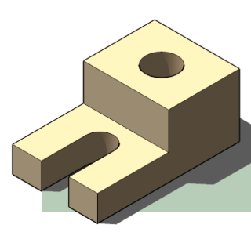
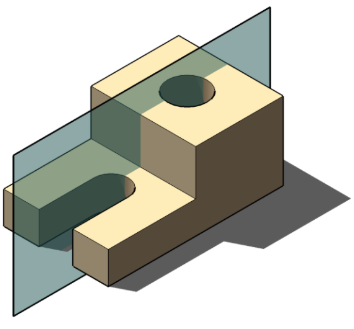
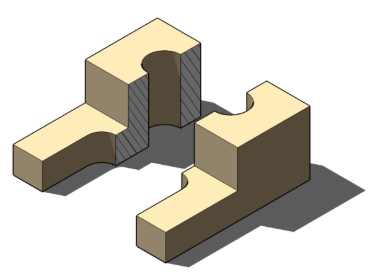
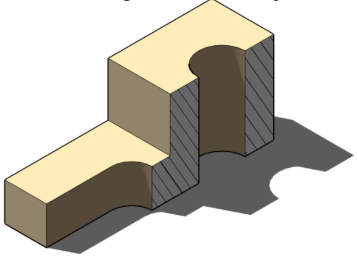
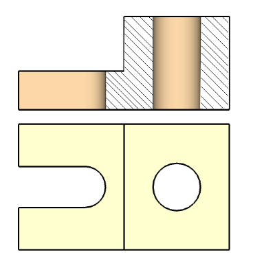
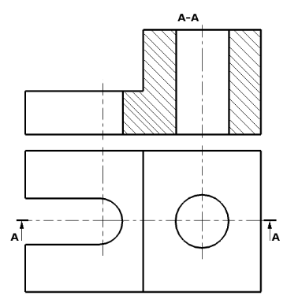

Procedimiento de Cortes
Representación de formas interiores en piezas.
Bienvenidos a esta nueva unidad de Dibujo Técnico. Hasta ahora, hemos aprendido a representar las caras visibles de un objeto y a utilizar líneas de trazos para indicar aquellas formas que quedan ocultas en su interior. Sin embargo, cuando una pieza tiene detalles internos complejos (como agujeros pasantes, ranuras o cavidades escalonadas), las líneas de trazos pueden superponerse y hacer que la interpretación del plano sea una tarea muy confusa.
Con el objeto de conseguir claridad en los dibujos, se recurre a cortar (imaginariamente) la pieza por el lugar más apropiado, y a continuación, se obtiene la proyección en corte de la pieza.
1 El Corte
El corte debe ser una operación que se haga para representar, de forma clara, las piezas con partes interiores, ya que de no hacerse así, la representación sería confusa.
"Corte, es una representación que muestra las formas interiores de una pieza."
Con esto se quiere decir que solo se cortarán aquellas piezas que tengan partes interiores y que no queden debidamente representadas con otro tipo de vistas. Aunque la pieza elegida podría representarse sin la realización de un corte, se utiliza esta herramienta para ejemplificar el proceso de corte.

2 Pasos para realizar un corte
Para que el corte cumpla con las normas de representación (rigiéndonos estrictamente por las Normas IRAM de la serie 4500), se deben seguir las siguientes operaciones:
Paso 1
Se determina el plano de corte, que ha de ser paralelo al plano de proyección. Se elegirá el plano más adecuado para que la representación sea lo más clara posible. En este caso, se elige un plano que pasa por el centro del agujero pasante.

Paso 2
Se realiza imaginariamente el aserrado de la pieza, por el plano de corte elegido. Se elimina mentalmente la parte de la pieza que está entre el plano de corte y el observador, y se proyecta como si fuese la pieza real. En este ejemplo, el alzado se representa en corte, mientras que la planta, se representará entera. Recordamos que el aserrado es mental, no es real.

Paso 3
Se efectúa la proyección de la parte de la pieza que está entre el plano de corte y el plano de proyección.

Proyecciones
Según esto, nos quedaría el alzado representado en corte y la planta (que se realiza entera). La zona de la pieza por donde pasa el plano de corte, se representa con un rayado a 45º. De esta forma, distinguimos la parte de pieza que es maciza (rayada) y la que es hueca (sin rayar).

3 Plano de dibujo (o lámina)
Como ya se ha visto en Obtención de vistas una cosa son las vistas y otra es la representación de esas vistas en un plano de dibujo o una lámina. Para esto tendremos que tener en cuenta:
- Las superficies por donde pasa el plano de corte, se rayan a 45º con líneas finas.
- El plano de corte (en caso de existir dudas por donde se ha cortado la pieza) se representa con una línea de eje (trazo de línea y punto fino), resaltado con dos trazos gruesos al final de la línea.
- Se colocarán dos flechas indicando la dirección de proyección, es decir, qué parte de la pieza es la que se representa.
- En la vista en que se representa el plano de corte (en este ejemplo, en la planta) se colocan dos letras mayúsculas en los extremos del plano de corte y junto a las flechas, del tipo A-A o A-B.
- En la parte representada en corte, se colocarán las mismas letras, indicando cual es el corte representado (en este ejemplo A-A).

Resumen: Recuerda que...
- Los cortes se realizan para conseguir claridad en los dibujos.
- Se realiza el corte (imaginario) de la pieza por el lugar más apropiado.
- Se proyecta la vista en corte y el resto de la pieza, entera (como si no hubiese corte).